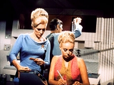
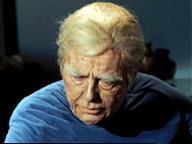
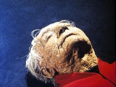
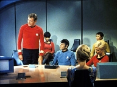

|
MANCHETE
DO EPISÓDIO
Reciclagem
de elementos produz segmento inócuo
Episódio
anterior | Próximo episódio Sinopse:
Data Estelar:
3478.2.
 A
caminho da Base Estelar 10, a USS Enterprise faz uma parada na colônia de Gamma
Hydra IV para reposição de suprimentos. O grupo avançado que é teletransportado
ao planeta é composto por Kirk, Spock, McCoy, Scotty, Chekov e a Tenente Galway,
e inicialmente não encontram ninguém na base da expedição e o capitão Kirk fica
surpreso com este fato, pois havia contatado há pouco o chefe da expedição. Então,
Chekov encontra um homem morto em uma das construções da colônia, que aparentemente
havia morrido de velhice. No entanto, Spock supõe que aquilo não poderia corresponder
com a realidade por que a expedição era composta apenas por pessoas jovens. Surge
então um casal de idosos, que se identificam como sendo o chefe da expedição Robert
Johnson e sua esposa Elaine, que diziam ter apenas 29 e 27 anos respectivamente,
causando choque em Kirk.
Kirk
teletransporta o grupo de descida juntamente com os outros colonos que ainda permaneciam
vivos à bordo da Enterprise, mas pouco tempo depois estes remanescentes da expedição
também morrem de velhice. Kirk coloca Spock, o Comodoro Stocker e uma antiga namorada,
a Doutora Janet Wallace, que estavam à caminho da Base Estelar 10, para investigar
o caso do abrupto envelhecimento dos componentes da expedição. Segundo Spock,
o único evento incomum que havia acontecido recentemente em relação ao planeta,
foi a passagem de um cometa.  Então,
o Capitão Kirk começa a ter problemas de memória e apresenta sintomas de artrite
avançada, ao mesmo tempo que Scotty, McCoy, Spock e a Tenente Galway mostram sinais
de envelhecimento. Estes sinais correspondem a uma taxa de envelhecimento de 30
anos por dia, mas curiosamente Chekov não apresenta nenhum sintoma. Spock descobre
que a causa do envelhecimento foi a passagem do cometa perto da orbita do planeta
Gamma Hydra IV, sendo que este emitia radiação de baixa intensidade. O Comodoro
Stocker começa a questionar a condição de Kirk continuar no comando e força Spock
a convocar uma audiência extraordinária de competência para retirá-lo do comando.
Enquanto isso, a Tenente Galway morre de velhice, enquanto Chekov permanece não
afetado. Então,
o Capitão Kirk começa a ter problemas de memória e apresenta sintomas de artrite
avançada, ao mesmo tempo que Scotty, McCoy, Spock e a Tenente Galway mostram sinais
de envelhecimento. Estes sinais correspondem a uma taxa de envelhecimento de 30
anos por dia, mas curiosamente Chekov não apresenta nenhum sintoma. Spock descobre
que a causa do envelhecimento foi a passagem do cometa perto da orbita do planeta
Gamma Hydra IV, sendo que este emitia radiação de baixa intensidade. O Comodoro
Stocker começa a questionar a condição de Kirk continuar no comando e força Spock
a convocar uma audiência extraordinária de competência para retirá-lo do comando.
Enquanto isso, a Tenente Galway morre de velhice, enquanto Chekov permanece não
afetado.
Na audiência,
Kirk é considerado incompetente para continuar no comando e o Comodoro assume
a nave. Ele ordena que a USS Enterprise vá diretamente para a Base Estelar 10,
passando pela Zona Neutra, ignorando a presença dos Romulanos. Spock, McCoy e
Kirk percebem que existe uma diferença entre a experiência deles no planeta e
a de Chekov: o russo ficou extremamente assustado quando encontrou o cadáver no
planeta. McCoy relembra que algumas pesquisas científicas antigas mostraram que
a adrenalina era uma substância potencialmente efetiva para combater os efeitos
da radiação, mas foi subseqüentemente abandonada quando a hyronalina foi descoberta.  Spock
desenvolve uma fórmula contendo adrenalina, que é testada primeiramente em Kirk.
Felizmente, ela se mostra efetiva e Kirk torna-se apto a retornar ao comando da
Enterprise, que estava sob ataque dos Romulanos, por causa da equivocada estratégia
do Comodoro Stocker em violar a Zona Neutra.
Num brilhante subterfúgio, Kirk
transmite uma mensagem criptografada usando o código 2, código este que já havia
sido decriptado pelos Romulanos. O Capitão sugere que a Enterprise havia adentrado
a Zona Neutra acidentalmente e que ele iria destruir a nave utilizando corbomite
recém instalado, que acabará com qualquer forma de matéria num diâmetro de 200.000
km e que a área da explosão terá que ser evitada por quatro anos. Os Romulanos
param de atacar a Enterprise e fogem, deixando espaço para que Kirk consiga deixar
a Zona Neutra para o espaço da Federação em Dobra 8, pouco depois o Comodoro faz
um “mea culpa” e assume que Kirk era o homem certo para comandar a nave enquanto
McCoy distribuiu o antídoto para os outros afetados.
Comentários: Certas
coisas na televisão são sempre muito difíceis de explicar. Com Jornada não é diferente.
Por mais que se tente procurar em “The Deadly
Years” uma razão para sua existência, nada parece justificar a realização
deste segmento, que parece ter nascido tão somente para tapar um buraco na programação
de exibição da série, tamanha é a sua falta de personalidade.
Geralmente
os episódios são bons, outros ruins, mas este segmento da Série
Clássica é medíocre, a começar pela trama. Uma doença que causa um violento
envelhecimento precoce, causado pela radiação emitida pela passagem de um cometa
próximo ao planeta Gamma Hydra IV recai sobre o grupo de desembarque da Enterprise.
E daí ?
Daí nada. Primeiro é necessário dar ao segmento ao menos um mérito.
Embora atualmente a maior preocupação dos cientistas quanto a cometas, asteróides,
meteoros e afins seja como evitar que um desses possa se espatifar em nosso planeta,
muito pouco ainda se sabe sobre estes. Neste ponto, ao levantar a hipótese de
que a passagem deste corpo celeste pela órbita do planeta possa ter criado tal
efeito a partir de um resíduo de radiação não detectável, o segmento flerta um
pouco com uma das principais características de uma boa série de ficção cientifica,
ou seja, o uso do fato cientifico como um dos elementos motivadores de sua existência.
Não se pode afirmar que tal cenário seja impossível mesmo hoje, imagine então
quarenta anos atrás ?
Mas ao mesmo é frustrante perceber que este
questionamento vai esvaecendo até se perder totalmente no vazio da trama sem sal
que se segue, mais rápido que a passagem de um cometa. É claro que ninguém esperaria
que o episodio se torna-se um tratado sobre astronomia, mas este é apenas mais
um dos desperdícios do segmento.
Voltando a vaca fria, temos agora nossos
“heróis” envelhecendo rapidamente a bordo da Enterprise, numa luta contra o tempo
para encontrar a cura. E daí ? Daí nada de novo. Neste tipo de trama onde o final
é obvio – afinal todos sabem que a cura vai ser encontrada – o importante é conseguir
explorar os efeitos causados sobre nossos personagens pela “encrenca da semana”,
e nisto “The Deadly Years” alcança apenas
sucesso parcial.
 A parte positiva é a oportunidade dada aos atores de exibir parte do seu talento,
quando estes precisam mostrar ao publico os efeitos de seu envelhecimento. Shatner,
Nimoy e Kelley conseguem um resultado bastante divertido, porem autêntico,
quando precisam envelhecer e a maquiagem de Fred
B. Phillips e sua equipe contribui de forma decisiva para isto. Os sinais
de envelhecimento inicialmente sutis, demonstrados por um cabelo grisalho, outro
ali, vão tomando conta dos personagens de forma muito bem executada, o que somando
a performance dos atores consegue um resultado muito eficiente.
A parte positiva é a oportunidade dada aos atores de exibir parte do seu talento,
quando estes precisam mostrar ao publico os efeitos de seu envelhecimento. Shatner,
Nimoy e Kelley conseguem um resultado bastante divertido, porem autêntico,
quando precisam envelhecer e a maquiagem de Fred
B. Phillips e sua equipe contribui de forma decisiva para isto. Os sinais
de envelhecimento inicialmente sutis, demonstrados por um cabelo grisalho, outro
ali, vão tomando conta dos personagens de forma muito bem executada, o que somando
a performance dos atores consegue um resultado muito eficiente.
Mas fica
nisto. Se a parte da “forma” pode ser considerada boa, a parte do “conteúdo” é
paupérrima. O envelhecimento precoce de Kirk, Spock e McCoy até poderia abrir
uma porta que permitisse algum acréscimo aos personagens, mas faltou um roteiro
que pudesse tirar algum proveito disto.
Kirk degenera mentalmente mais
rápido que McCoy, e demonstra uma enorme dificuldade em lidar com a diminuição
aguda da sua condição física. Este seria um quadro psicologicamente interessante,
mas a condução pouco inspirada da situação do capitão da Enterprise jamais explora
esta possibilidade com resultado palpável. Ficamos apenas assistindo Shatner
desfilar seus trejeitos e reclamando de todo mundo, conseguindo com isto
apenas uma caricatura da velhice, mas nada muito inspirado em termos de qualidade
dramática.
Temos ainda a descoberta de um antigo relacionamento de Kirk,
que pelo demonstrado em tela, parece ter sido bem sério. Mas a conveniente (bela)
presença a bordo da doutora Janet Wallace (Sarah
Marshall), que por uma graça dos céus é endocrinologista, e que por coincidência
havia se casado com um homem bem mais velho após o termino do relacionamento dos
dois não ajuda muito ao enredo.
Salta aos olhos o excesso de coincidências,
construídas de forma totalmente artificial de forma a se adequar as necessidades
do roteiro de propiciar uma dose a mais de drama a historia. Está obvio que não
funcionou.

O que deveria ser o grande momento dramático do episodio já nasce com a marca
do fracasso, tal absurdo que é a tal “audiência de competência”. Se não já fosse
um absurdo total criar um tribunal de inquisição para decidir se o capitão da
nave tem ou não condições de permanecer em comando, tal audiência simplesmente
faz com que todos os envolvidos na busca da solução do problema parem as suas
atividades para participar de tal circo. Não dá.
Tudo isto quando a única
saída elegante possível seria que McCoy declara-se Kirk incapaz, e Spock toma
se o comando da nave, pois ainda tinha condições de fazê-lo. É obvio que Spock
estava em condições de assumir a nave, mesmo que por pouco tempo, e evitar aquela
palhaçada.. Ao invés disto Spock cai no “Truque da lógica” de Stocker, o que permite
a audiência. Cabe lembrar a presença de Scotty no grupo de desembarque apenas
para que ele ficasse doente e não pudesse assumir o comando, como de costume,
quando o capitão ou o imediato estiveram ausentes.
Como uma conveniência
leva a outra, apesar de estar sofrendo da mesma doença, a “opinião profissional”
de McCoy foi aceita na audiência, estabelecendo o precedente,o que demonstra um
contra-senso, para ser ameno.
 Tal ação além de benéfica a saúde dos velhinhos e do segmento, evitaria que a
audiência fosse apresentada a um dos mais ineptos oficiais da Frota Estelar, o
Comodoro George Stocker (Charles Drake),
homem tão sem personalidade quanto o segmento em si. Qualquer fã de Perdidos
no Espaço saberia mais sobre os Romulanos
do que este senhor, que parece desconhecer totalmente os termos do tratado
entre este povo e a Federação. Santa incompetência, Batman ! Tudo isto feito para
que nosso esperto capitão, outra vez jovem (miraculosamente) pudesse aparecer
no ultimo minuto e salvar o dia.
Tal ação além de benéfica a saúde dos velhinhos e do segmento, evitaria que a
audiência fosse apresentada a um dos mais ineptos oficiais da Frota Estelar, o
Comodoro George Stocker (Charles Drake),
homem tão sem personalidade quanto o segmento em si. Qualquer fã de Perdidos
no Espaço saberia mais sobre os Romulanos
do que este senhor, que parece desconhecer totalmente os termos do tratado
entre este povo e a Federação. Santa incompetência, Batman ! Tudo isto feito para
que nosso esperto capitão, outra vez jovem (miraculosamente) pudesse aparecer
no ultimo minuto e salvar o dia.
Alias, o segmento demonstra toda falta
de identidade própria o usar o manjado truque da “Corbomite” ou “corbomita”, como
queiram, pescado lá de "The Corbomite Maneuver".
Até mesmo os efeitos visuais das Aves de Guerra Romulanas foram reaproveitados
de “Balance of Terror”.
Sobre
o mágico “suco de Adrenalina” que permite a descoberta da cura na ultima hora
™, além de tão frustrante quanto qualquer solução fabricada deste jeito, tem outro
efeito nocivo, ao inaugurar a era de recuperações milagrosas em Jornada
nas Estrelas. Desculpem, mas apenas pelo dever oficio devo comentar que
o fato de descobrir uma a cura para o processo de envelhecimento necessariamente
não deveria reverter os efeitos já manifestados pelos nossos bravos oficiais.
Mas, fazer o que, se não havia mais tempo, não é verdade ?
Não resta
duvida de que “The Deadly Years” nasceu
da falta de idéias e da necessidade de cumprir prazos e orçamentos, e se não causa
raiva, o segmento não deixa a menor saudade nem mesmo nos fãs mais fundamentalistas.

Luiz Felipe Tavares escreveu um artigo sobre o Terceiro ano da Série
clássica, onde diz que “Não há episódios
"chatos" na Série Clássica; há episódios ruins, mas nenhum chato.” Particularmente
o autor que lhes escreve acredita ter descoberto o primeiro episodio chato da
Serie Clássica, talvez tão chato que nem
mesmo o colunista do TB tenha se lembrado dele ao escrever o seu artigo defendendo
a terceira temporada da Série Clássica.
Porém se sobrava algo na terceira temporada que falta em
“The Deadly Years” é personalidade. Citações:
Chekov: "Give us some
more blood, Chekov”. “The needle won't hurt, Chekov”. “Take off your shirt, Chekov”.
“Roll over, Chekov”. “Breathe deeply, Chekov”. «Blood sample, Chekov”. “Marrow
sample, Chekov”. “Skin sample, Chekov."
("Dê-nos
um pouco mais de sangue, Chekov". "a agulha não ferirá, Chekov".
"retire sua camisa, Chekov". "Vire, Chekov". "Respire
profundamente, Chekov". "amostra sangue, Chekov". "amostra
de medula, Chekov". "amostra de pele, Chekov.") Dr.
Wallace: "The heart is not a logical organ."
("O coração
não é um órgão lógico.") McCoy:
"I'm
not a magician, Spock, just an old country doctor."
("Eu não
sou um mágico, Spock, apenas um velho medico do interior.") Trivia:  Fred B. Phillips trabalhou de forma excelente na maquiagem e nos moldes usados
nos personagens neste episodio. Michael Westmore anos depois usaria o trabalho
de Phillips para executar a maquiagem de Kelley no primeiro episodio de A
Nova Geração.
Fred B. Phillips trabalhou de forma excelente na maquiagem e nos moldes usados
nos personagens neste episodio. Michael Westmore anos depois usaria o trabalho
de Phillips para executar a maquiagem de Kelley no primeiro episodio de A
Nova Geração.
Nos primeiros rascunhos dos roteiros de Jornada
nas Estrelas II – A Ira de Khan, a Doutora Janet Wallace seria escolhida
para ser o antigo amor de Kirk. Foi também sugerido que ela seria a mulher apresentada
a Kirk por Gary Mitchell anos antes, fato mencionado em "Where
No Man Has Gone Before".
Quando
Kirk menciona a Corbomite, Chekov dá um sorriso indicando saber do que se tratava,
o que justificaria (?) o fato de anos mais, Khan ter reconhecido o oficial em
Jornada nas Estrelas II. Walter
Koenig ainda não fazia parte do elenco durante os eventos de “Space
Seed”.
Sarah
Marshall (Janet Wallace) já havia trabalhado com Shatner no seriado The
Nurses, coincidentemente em um episodio chamado “A
Difference of Years” . Ela e Charles Drake (Stocker) já haviam trabalhado
juntos em Daniel Boone.
Ficha
técnica: Escrito
por David P. Harmon
Direção de
Joseph Pevney
Música de Fred Steiner e Sol Kaplan
Exibido
em 08 de Dezembro de 1967
Produção: 40
Elenco:
William Shatner como James Tiberius
Kirk
Leonard Nimoy como Spock
DeForest Kelley
como Leonard H. McCoy
Nichelle Nichols como Uhura
George
Takei como Hikaru Sulu
Elenco convidado:
Charles Drake como
Commodore Stocker
Sarah Marshall como Dr. Janet Wallace
Majel Barrett como Christine Chapel
Felix Locher
como Robert Johnson
Carolyn Nelson como Ordenança Atkins
Laura Wood como Elaine Johnson
Beverly Washburn como
Arlene Galway Episódio
anterior | Próximo episódio Sinopse
por Alexandre Bortuluci |